Constitution de l'atome
Ce chapitre sera débloqué en fin de séquence, au rythme de la classe. Le code de déblocage est transmis via le cahier de textes — il figure aussi en bas de ta fiche de cours.
Sommaire du chapitre
Physique-Chimie · Seconde générale · Thème 1 — Constitution et transformations de la matière
Constitution de l'atome
Thème 1 · Chapitre 3 — cours & exercices corrigés
01 Histoire du modèle atomique
Synthèse de l'Activité 1 p. 90.
Le modèle de l'atome que nous étudions en classe de Seconde est le modèle de Bohr. D'après ce modèle, l'atome est constitué d'un noyau positif autour duquel gravitent des électrons négatifs répartis sur des couches.
Ce modèle hérite des avancées scientifiques qui ont permis de préciser nos connaissances sur un atome qui n'était au départ modélisé que par une simple sphère dure.
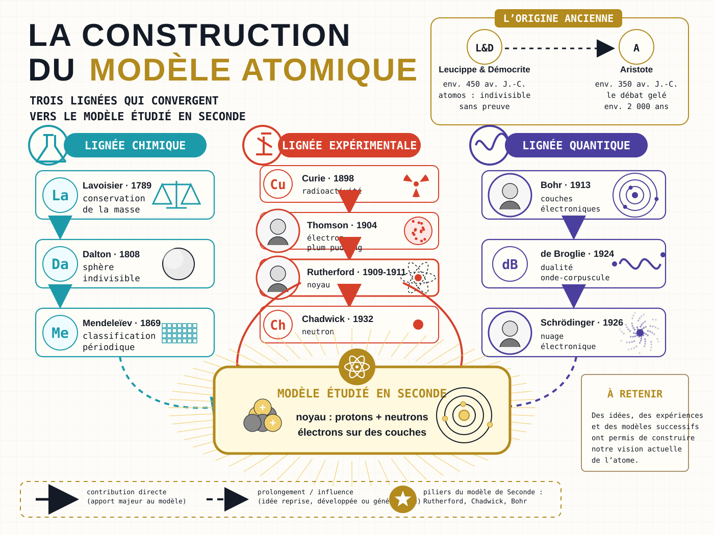
02 Le modèle de Bohr
Nous adoptons donc le modèle de Bohr. Première question : de quoi l'atome est-il fait ?
L'atome est formé :
- d'un noyau, constitué de nucléons, chargé positivement ;
- d'un cortège électronique, situé autour du noyau et constitué d'électrons, chargé négativement.
Les nucléons, signifiant littéralement « particules du noyau », peuvent être des protons ou des neutrons.
- Les protons sont chargés positivement.
- Les neutrons n'ont pas de charge.
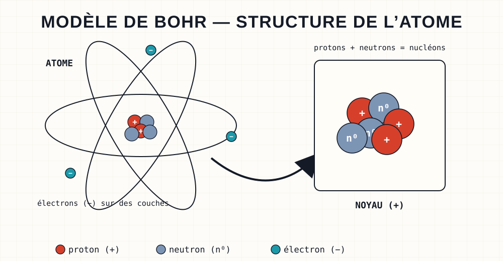
Pour simplifier, on utilisera parfois cette écriture symbolique :
03 Écriture symbolique du noyau
Protons, neutrons, électrons… Pour décrire un noyau sans le dessiner, les chimistes ont adopté une écriture compacte.
L'écriture conventionnelle du noyau AZX porte trois informations :
X est le symbole de l'élément chimique. La première lettre s'écrit toujours en majuscule et la seconde en minuscule (ex : C, He, U, Al etc.).
A est le nombre de masse. Il correspond au nombre de nucléons (protons et neutrons).
Z est le numéro atomique. C'est le nombre de protons.
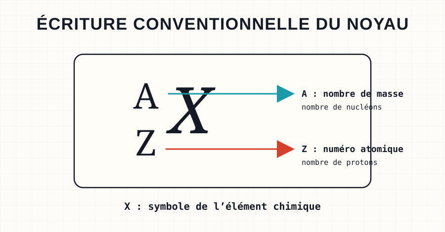
Pour calculer le nombre de neutrons, on utilise la formule :
A nombre de masse (nucléons)
Z numéro atomique (protons)
Donner la composition du noyau 3517Cl.
Voir la correction
Z = 17 donc le noyau possède 17 protons.
N = A − Z
N = 35 − 17 = 18, donc il possède 18 neutrons.
Donner la notation symbolique du noyau d'oxygène possédant 8 protons et 8 neutrons.
Voir la correction
Le noyau possède 8 protons donc Z = 8. D'après la classification périodique, l'élément oxygène se note O. Il possède 8 neutrons donc N = 8.
N = A − Z, donc A = N + Z
A = 8 + 8 = 16. Le noyau admet pour notation symbolique 168O.
Donner l'écriture conventionnelle des deux noyaux représentés ci-dessous.
Voir la correction
13 protons donc Z = 13. L'élément aluminium se note Al. 14 neutrons donc N = 14 et ainsi A = N + Z = 14 + 13 = 27. Le noyau admet pour notation symbolique 2713Al.
2 protons donc Z = 2. D'après la classification périodique, il s'agit de l'hélium, qui se note He. 2 neutrons donc A = N + Z = 2 + 2 = 4. Le noyau admet pour notation symbolique 42He.
Réaliser des schémas de noyaux atomiques à partir de ces écritures conventionnelles : 11H, 146C, 94Be.
Voir la correction
11H : Z = 1 et N = 1 − 1 = 0, soit 1 proton seul. 146C : Z = 6 et N = 14 − 6 = 8, soit 6 protons et 8 neutrons. 94Be : Z = 4 et N = 9 − 4 = 5, soit 4 protons et 5 neutrons.
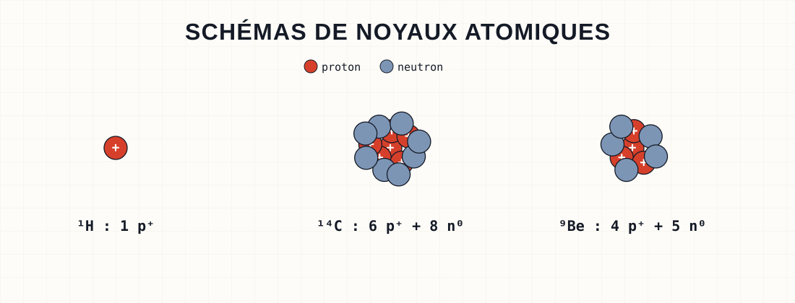
04 Isotopes
Même élément, mais pas toujours le même noyau : jouons sur le nombre de neutrons.
Des noyaux atomiques isotopes sont des noyaux possédant le même nombre de protons mais un nombre différent de neutrons.
Deux noyaux isotopes ont donc le même numéro atomique Z : ils appartiennent au même élément chimique. Ils ont cependant un nombre de masse A différent, ils n'ont donc pas la même masse.
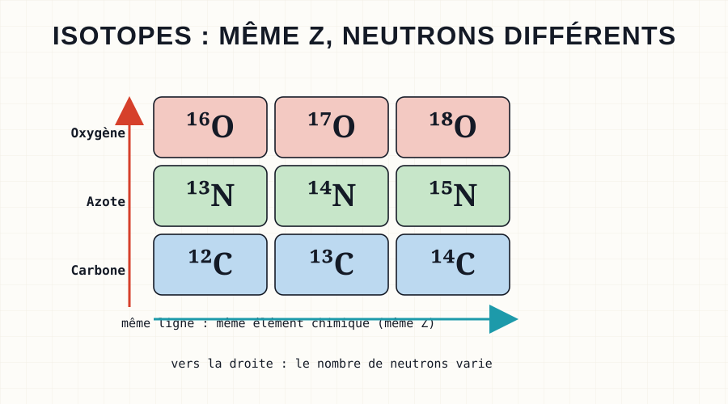
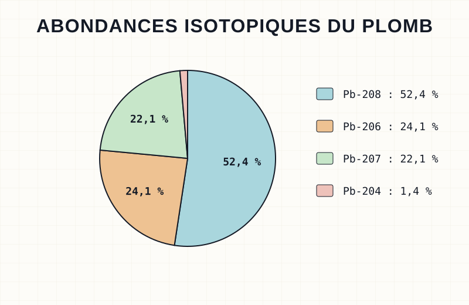
Dans la nature, différents isotopes d'un même élément sont présents selon certaines proportions : on parle d'abondance isotopique.
Donner la composition des noyaux 23892U et 23592U (uranium 238 et uranium 235) et justifier que ce sont des isotopes.
Voir la correction
Pour 23592U : Z = 92 et N = A − Z = 235 − 92 = 143. Ce noyau d'uranium a 92 protons et 143 neutrons.
Pour 23892U : Z = 92 et N = A − Z = 238 − 92 = 146. Ce noyau d'uranium a 92 protons et 146 neutrons.
Ces deux noyaux ont le même nombre de protons mais un nombre de neutrons différent : ce sont des isotopes.
05 Masse de l'atome
Maintenant que l'on connaît les habitants de l'atome, pesons-les.
Les masses des particules composant l'atome sont données dans le tableau ci-dessous.
| Particule | Masse (kg) |
|---|---|
| Électron | 9,109 × 10⁻³¹ |
| Proton | 1,673 × 10⁻²⁷ |
| Neutron | 1,675 × 10⁻²⁷ |
La masse d'un neutron est très proche de celle d'un proton, de telle manière qu'ils sont considérés de même masse :
mneutron ≈ mproton = 1,67 × 10⁻²⁷ kg
Comparer la masse d'un électron à celle d'un nucléon. Qu'en déduisez-vous ?
Voir la correction
mnucléonmélectron = 1,67 × 10⁻²⁷9,11 × 10⁻³¹ ≈ 1833
Un nucléon est plus de 1800 fois plus massif qu'un électron. On dit que la masse d'un électron est négligeable devant la masse d'un nucléon. Lors du calcul de la masse d'un atome, il n'est donc pas nécessaire de prendre en compte la participation des électrons.
La masse d'un atome m peut donc être approximée à celle de son noyau ; elle se calcule grâce à la relation suivante :
A nombre de masse (nucléons)
mn masse d'un nucléon · 1,67 × 10⁻²⁷ kg
Le tritium est un atome d'hydrogène (Z = 1) possédant deux neutrons, alors que l'hydrogène n'en possède généralement aucun.
Calculer la masse du tritium.
Voir la correction
Le tritium possède 1 proton (Z = 1) et 2 neutrons, donc A = Z + N = 1 + 2 = 3.
m = A × mn
m = 3 × 1,67 × 10⁻²⁷ = 5,01 × 10⁻²⁷ kg
Calculer la masse d'un atome d'or. Voici l'écriture conventionnelle de son noyau : 19779Au.
Voir la correction
A = 197.
m = A × mn
m = 197 × 1,67 × 10⁻²⁷ ≈ 3,29 × 10⁻²⁵ kg
06 Charges électriques
Après la masse, l'autre carte d'identité des particules : leur charge électrique.
La charge élémentaire e est la plus petite valeur positive de charge électrique, elle est portée par les protons. La charge portée par les électrons est l'opposé de celle des protons et vaut −e.
L'unité de la charge électrique
est le coulomb (C).
Un noyau porte une charge positive qui se calcule en utilisant la formule :
Qnoyau = Z × e
L'atome est électriquement neutre, c'est-à-dire qu'il contient autant de protons, chargés positivement, que d'électrons, chargés négativement. Ainsi la charge de l'ensemble des électrons (cortège électronique) est l'opposée de la charge du noyau de l'atome :
Qélectrons = −Qnoyau
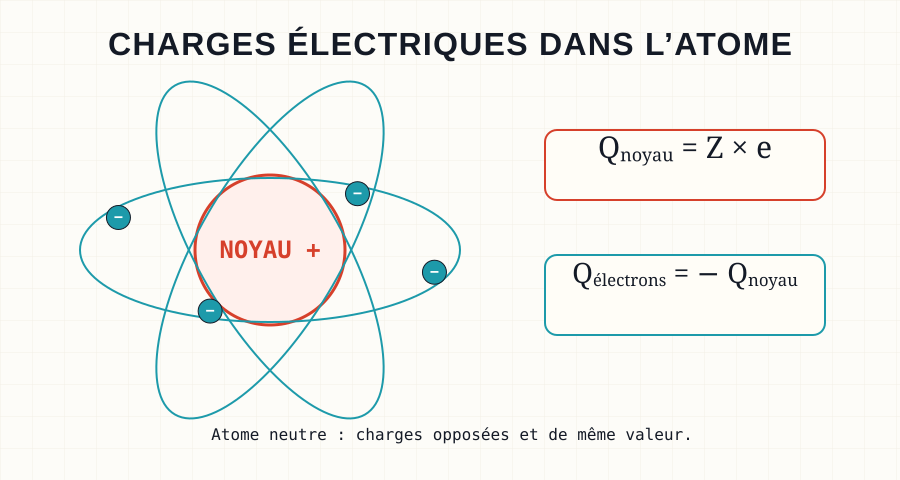
Quelle est la composition d'un atome de chlore qui a pour noyau 3517Cl ? Quelle est la charge de son noyau ? En déduire la charge de son cortège électronique.
Voir la correction
Z = 17 donc le noyau possède 17 protons et l'atome 17 électrons, car un atome possède autant de protons que d'électrons. N = A − Z = 35 − 17 = 18, donc il possède 18 neutrons.
Qnoyau = Z × e
Qnoyau = 17 × 1,602 × 10⁻¹⁹ = 2,7234 × 10⁻¹⁸ C
Qélectrons = −Qnoyau
Qélectrons = −2,7234 × 10⁻¹⁸ C
07 Dimensions de l'atome
Dernière caractéristique, et pas des moindres : la taille. Préparez-vous à beaucoup de vide.
Le rayon de l'atome, assimilé à une sphère, est de l'ordre de 10⁻¹⁰ m, soit un dixième de milliardième de mètre. Cette dimension a donné naissance à sa propre unité, l'angström (10⁻¹⁰ m = 1 Å).
Le rayon du noyau de l'atome, assimilé à une sphère, est de l'ordre de 10⁻¹⁵ m, soit un millionième de milliardième de mètre. Il existe également une unité adaptée, le femtomètre (10⁻¹⁵ m = 1 fm).
La comparaison de ces deux rayons nous donne :
10⁻¹⁰10⁻¹⁵ = 10⁵ = 100 000
L'atome est cent mille fois plus grand que son noyau : l'atome est donc essentiellement constitué de vide. Sa structure est dite lacunaire.
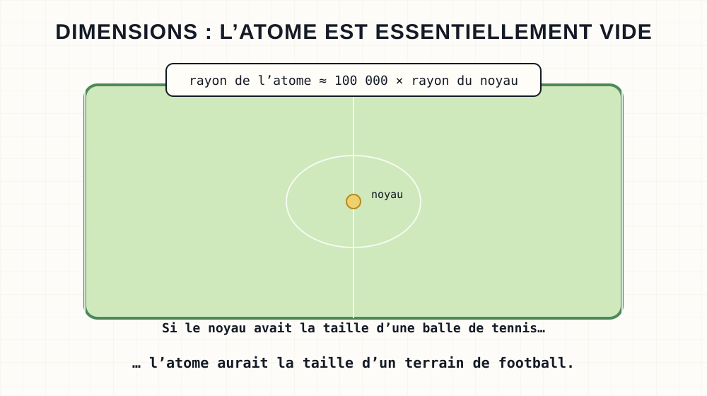
Quel serait le diamètre d'un atome si le rayon de son noyau était similaire à celui d'une balle de tennis (rBT = 3,2 cm) ?
Voir la correction
rnoyau = rBT. L'atome est 100 000 fois plus grand que son noyau.
datome = 2 × ratome = 2 × 100 000 × rnoyau = 2 × 100 000 × rBT
datome = 2 × 100 000 × 3,2 = 640 000 cm = 6 400 m = 6,4 km
08 Les ions monoatomiques
Jusqu'ici l'atome était neutre. Que se passe-t-il s'il perd ou gagne des électrons ?
Un ion monoatomique est un atome ayant gagné ou perdu un ou plusieurs électrons lors d'une réaction chimique. Il acquiert donc une charge en raison d'un déséquilibre entre le nombre de protons et d'électrons.
Il en existe de deux types :
- Les anions ont gagné un ou plusieurs électrons, ils sont chargés négativement : Cl⁻ provient d'un atome de chlore ayant gagné un électron, O²⁻ d'un atome d'oxygène qui en a gagné deux.
- Les cations ont perdu un ou plusieurs électrons, ils sont chargés positivement : K⁺ provient d'un atome de potassium ayant perdu un électron, Fe³⁺ d'un atome de fer qui en a perdu trois.
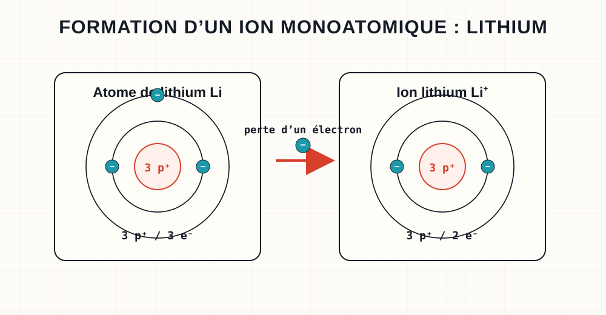
Donner la composition des ions Mg²⁺, H⁺ et F⁻. On donne les écritures conventionnelles de leurs noyaux : 2412Mg, 11H, 199F.
Voir la correction
Z = 12 donc 12 protons ; 10 électrons car l'ion Mg²⁺ possède deux protons de plus qu'il n'a d'électrons ; N = A − Z = 24 − 12 = 12 donc il possède 12 neutrons. Soit 12 p⁺ | 10 e⁻ | 12 n⁰.
Z = 1 et N = 1 − 1 = 0 ; le cation H⁺ a perdu son unique électron. Soit 1 p⁺ | 0 e⁻ | 0 n⁰.
Z = 9 et N = 19 − 9 = 10 ; l'anion F⁻ a gagné un électron (9 + 1 = 10). Soit 9 p⁺ | 10 e⁻ | 10 n⁰.
09 Élément chimique
Noyaux, atomes, ions… Qu'ont en commun toutes ces entités ? Une seule chose : leur numéro atomique.
Toutes les entités chimiques (noyaux, atomes, ions) possédant le même numéro atomique Z appartiennent au même élément chimique.
Tout élément chimique est identifié par son symbole. Chaque numéro atomique Z est donc associé à un symbole bien distinct. Les éléments chimiques sont rangés dans l'ordre de leur Z croissant dans le tableau périodique des éléments chimiques.
L'élément fer a pour numéro atomique Z = 26 et son symbole est Fe. L'atome de fer s'écrit Fe, les ions fer Fe²⁺ ou encore Fe³⁺, et le noyau de fer 5626Fe ; tous appartiennent à l'élément fer.
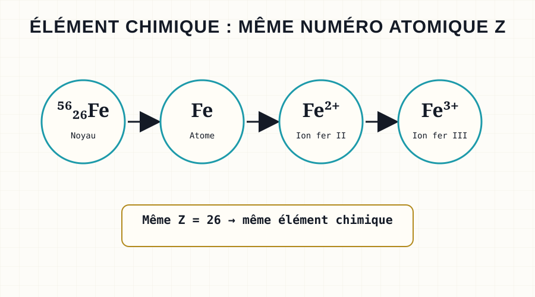
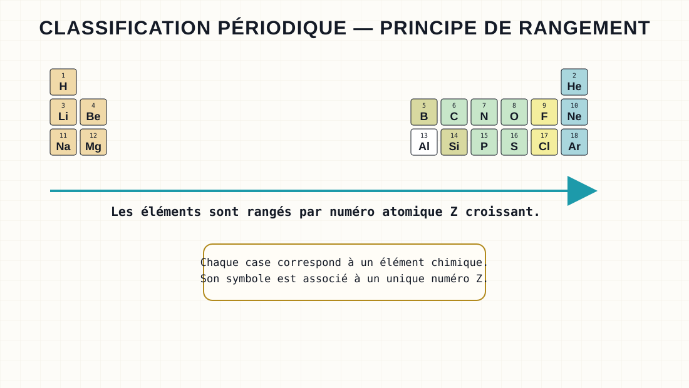
Associer les entités chimiques appartenant au même élément : H · O · 199F · 11H · H⁺ · F⁻ · O²⁻ · 168O · F²⁻.
Voir la correction
H | H⁺ | 11H
O | O²⁻ | 168O
F⁻ | F²⁻ | 199F
✓ Pour le DS, je sais :
M. Van HoordeLycée général Isaac de l'Étoile · Poitiers